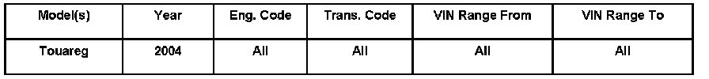
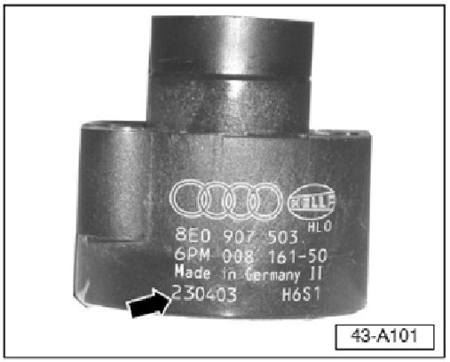
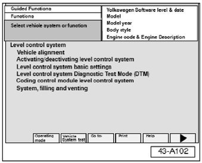
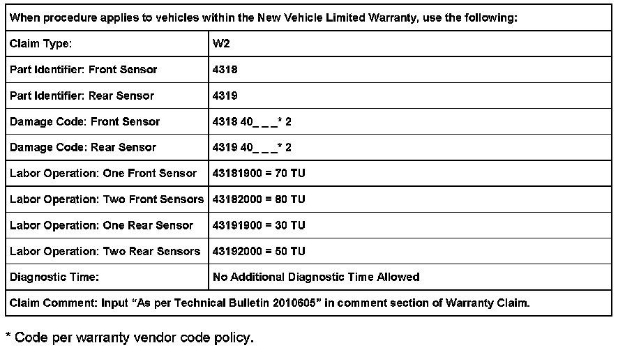
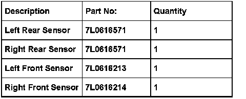

Suspension - Error Message/DTC's 00774/00776/01769
ConditionSelf-Leveling Suspension, Error Message Displayed in Multi-Function Display
Instrument cluster multi-function display shows an air suspension error message. Diagnostic Trouble Code (DTCs) 00774 - Left Rear Sensor, 00775 - Right Rear Sensor, Left Front Sensor - 00776 or Right Front Sensor - 01769 may be stored in memory.

43 06 01 Sept. 22, 2006 2010605 Supersedes T.B. Group 43 number 04-01 dated May 11, 2004 due to updated information.
Technical Background
The reluctance wheel cracked during the manufacturing process and caused a faulty sensor signal. This is the cause for the DTC.
Production Solution
Updated leveling sensors as of July 22, 2003.
Service
Interrogate self-leveling suspension for DTCs.
If air suspension error message is not related to leveling sensors, or if DTCs other than 00774, 00775, 00776 or 01769 are stored in memory:
- Do Not continue with this bulletin. See Guided Fault Finding in VAS 5051/5052.
If air suspension error message is related to leveling sensors or if one or more of the DTCs are present, continue with this Technical Bulletin.
Identifying Sensors

Check manufacturing date -arrow- of all leveling sensors.
If leveling sensor manufacturing date is between February 01, 2003 and July 22, 2003 (ddmmyy):
- Replace leveling sensor, see Repair Manual Group 43, Self-Leveling Suspension.
If leveling sensor manufacturing date is not between February 01, 2003 and July 22, 2003:
- No service action required.
Adaptation of Sensors

With leveling sensor(s) replaced as necessary and the VAS 5051/5052 Diagnostic tool connected:
- Use Guided Functions to re-adapt the control position of the leveling control system.
- Select Guided Functions and navigate through menus selecting the appropriate model, model year, body style, etc.
- Navigate to Level control system, Level control system basic settings.
- Select, then select the forward arrow button and follow instructions.

Warranty
Required Parts and Tools

No Special Tools required.
Tip: Part number(s) are for reference only. Always see ETKA for the latest part(s) information.